CODING AGENTS AS PIXEL WORLD MODELS
traex/GPT-6.1-Sol · common50_0019
点击播放 · 原生 RGB 像素
逐轮保存的候选
回放视频、检查图与代码变化。
每份候选均可单独播放。实际图片检查记录在下方工具轨迹中。
候选 01播放与检查图
点击播放 · 原生 RGB 像素

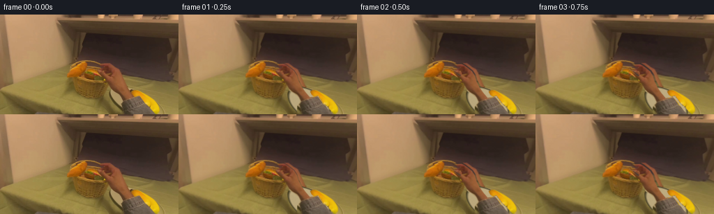
展开代码变化
--- 上一保存版本
+++ 本次保存版本
@@ -0,0 +1,159 @@
+"""Deterministic, source-pixel based short pick-and-place animation."""
+from pathlib import Path
+import numpy as np
+import cv2
+from PIL import Image, ImageDraw, ImageFilter
+import artifact_io
+
+ROOT=Path(__file__).resolve().parent
+W,H=256,144
+S=4
+rng=np.random.default_rng(5)
+source=np.array(Image.open(ROOT/'first_frame.png').convert('RGB'))
+
+def polygon(points,blur=.35):
+ a=Image.new('L',(W*S,H*S));ImageDraw.Draw(a).polygon([(round(x*S),round(y*S)) for x,y in points],fill=255)
+ if blur:a=a.filter(ImageFilter.GaussianBlur(blur*S))
+ return np.array(a,dtype=np.float32)/255
+
+def over(bg,fg,a):
+ return bg*(1-a[...,None])+fg*a[...,None]
+
+handpts=[(136.9,72.3),(142.4,70.5),(150.7,70.2),(155.3,72.6),(160.0,76.1),(165.9,80.8),(170.0,87.0),(172.4,95.0),(177.0,103.8),(182.6,111.5),(188.9,118.9),(187.0,121.0),(175.4,125.0),(172.5,118.4),(166.8,113.7),(160.3,110.0),(155.7,104.3),(152.7,97.2),(148.3,92.0),(142.3,88.2),(138.5,84.9),(134.8,81.9),(135.2,80.1),(137.0,79.9),(140.0,82.1),(144.7,85.0),(149.3,88.1),(151.0,86.5),(151.7,83.0),(149.4,80.0),(145.4,79.6),(141.3,80.7),(138.0,82.0),(136.9,79.1),(138.6,76.8),(142.4,74.9),(145.6,74.1),(143.5,73.4),(138.5,73.7)]
+sleevepts=[(175.4,124.5),(179.1,121.0),(199.0,117.0),(207.0,125.2),(215.0,136.2),(223.0,144),(170.6,144),(171.0,131.5)]
+burgerpts=[(119.4,81.5),(122.0,79.3),(127.7,78.5),(132.9,79.2),(138.2,81.7),(141.9,84.6),(145.0,88.5),(147.8,92.4),(147.0,94.9),(141.0,95.0),(134.0,94.2),(127.3,93.1),(122.0,90.6),(119.3,86.6)]
+ha=polygon(handpts,.3)
+sa=polygon(sleevepts,.28)
+ba=polygon(burgerpts,.35)
+armalpha=np.maximum(ha,sa)
+# Clean the old moving objects by classical local inpainting, then reconstruct
+# only the areas that are truly hidden in the photograph.
+low_arm=cv2.resize(armalpha,(W,H))
+low_burger=cv2.resize(ba,(W,H))
+mask=((np.maximum(low_arm,low_burger)>.07)*255).astype(np.uint8)
+clean=cv2.inpaint(source,mask,4,cv2.INPAINT_TELEA).astype(float)
+y,x=np.mgrid[:H,:W]
+# Background behind the lifted hand: the adjacent dark fabric and tablecloth.
+sx=np.clip(x+57,0,255)
+cloth=source[y,sx].astype(float)
+# Avoid copying the yellow food into the former forearm region.
+cloth2=source[y,np.clip(x+89,233,253)].astype(float)
+line=83.4+.108*(x-140)
+weight=np.clip((y-line+1)/3,0,1)
+replacement=cloth*(1-weight[...,None])+cloth2*weight[...,None]
+repair=low_arm.copy()
+clean=over(clean,replacement,repair)
+# Repair the small occluded right-hand edge of the woven basket with mirrored
+# wicker pixels from its unobstructed left wall.
+mirror=source[y,np.clip(254-x,0,255)].astype(float)
+basket_region=((x>141)&(x<154)&(y>94)&(y<118)&(((x-126)/25)**2+((y-100)/21)**2<1)).astype(float)
+clean=over(clean,mirror,basket_region*low_arm)
+# Interior revealed by picking up the sandwich. Preserve the actual rim.
+inside=np.empty_like(clean)
+noise=cv2.GaussianBlur(rng.normal(0,2,(H,W)),(0,0),.8)
+for c,v in enumerate([116,87,40]):inside[:,:,c]=v+noise+(y-86)*1.4
+inside_mask=low_burger*np.clip((95.3-y)/1.3,0,1)
+clean=over(clean,inside,inside_mask)
+# Re-create the ceramic plate in the formerly occluded tabletop area using a
+# perspective ellipse, warm reflected illumination, and a fine dark rim.
+X,Y=x-187.0,y-129.0
+ang=np.deg2rad(34)
+u=X*np.cos(ang)+Y*np.sin(ang);v=-X*np.sin(ang)+Y*np.cos(ang)
+r=np.sqrt((u/35.0)**2+(v/20.0)**2)
+plate=np.zeros_like(clean)
+for c,value in enumerate([188,169,126]):
+ plate[:,:,c]=value + 3.5*(-v/20) + .9*noise
+edge=np.clip((r-.88)/.1,0,1)
+for c,col in enumerate([64,59,35]):plate[:,:,c]=plate[:,:,c]*(1-edge)+col*edge
+platealpha=np.clip((1.015-r)*22,0,1)
+# Ground-contact shadow under the ceramic edge.
+sh=np.exp(-(((u-1)/37)**2+((v-2)/22)**2)*2)*.20
+clean*=1-sh[...,None]
+clean=over(clean,plate,platealpha)
+# Keep the yellow object exactly as seen, in front of the right plate rim.
+yellowpts=[(188.5,110.9),(192.3,108.3),(197.1,108.5),(203.2,111.1),(211.5,116.2),(218.8,123.6),(225.3,132.0),(228.6,140.8),(227.5,144),(217.9,144),(212.2,136.8),(206.1,131.4),(200.5,125.4),(196.4,119.6),(191.2,116.2)]
+ya=cv2.resize(polygon(yellowpts,.25),(W,H))
+# Only the visible yellow pixels should be restored; gray sleeve still moves.
+is_yellow=((source[:,:,0].astype(float)>source[:,:,2]+48)&(source[:,:,1].astype(float)>source[:,:,2]+40)).astype(float)
+ya*=cv2.GaussianBlur(is_yellow,(3,3),.4)
+clean=over(clean,source.astype(float),ya)
+clean=np.clip(clean,0,255)
+Image.fromarray(clean.astype('uint8')).save(ROOT/'.tmp/clean.png')
+
+hi_source=cv2.resize(source,(W*S,H*S),interpolation=cv2.INTER_CUBIC).astype(float)
+hi_clean=cv2.resize(clean,(W*S,H*S),interpolation=cv2.INTER_CUBIC).astype(float)
+# Extend the authentic sweater texture beyond the image, so no crop edge is
+# exposed when the forearm lifts.
+EH=208
+arm_rgb=np.zeros((EH*S,W*S,3),float)
+arm_rgb[:H*S]=hi_source
+for row in range(H*S,EH*S):
+ sample=H*S-1-(row-H*S)%(25*S)
+ arm_rgb[row]=hi_source[sample]
+arm_a=np.zeros((EH*S,W*S),float);arm_a[:H*S]=armalpha
+ext=Image.new('L',(W*S,EH*S));ImageDraw.Draw(ext).polygon([(171*S,142*S),(222*S,142*S),(256*S,182*S),(256*S,208*S),(183*S,208*S)],fill=255)
+ext=np.array(ext,dtype=float)/255
+arm_a=np.maximum(arm_a,ext)
+# A sharp cutout would emphasize the source's defocus; the alpha is already
+# softened by the same sub-pixel optical blur as the still image.
+def transform(rgb,alpha,c,d,scale=1.,rot=0.):
+ angle=np.deg2rad(rot)
+ a=scale*np.cos(angle);b=scale*np.sin(angle)
+ M=np.array([[a,-b,(d[0]-a*c[0]+b*c[1])*S],[b,a,(d[1]-b*c[0]-a*c[1])*S]])
+ prem=rgb*alpha[...,None]
+ rgb2=cv2.warpAffine(prem,M,(W*S,H*S),flags=cv2.INTER_LINEAR,borderMode=cv2.BORDER_CONSTANT)
+ a2=cv2.warpAffine(alpha,M,(W*S,H*S),flags=cv2.INTER_LINEAR,borderMode=cv2.BORDER_CONSTANT)
+ return rgb2,a2
+
+def smooth(a):return a*a*(3-2*a)
+def interp(i,keys):
+ for j in range(len(keys)-1):
+ t0,p0=keys[j];t1,p1=keys[j+1]
+ if i<=t1:
+ f=smooth(np.clip((i-t0)/(t1-t0),0,1));return np.asarray(p0)*(1-f)+np.asarray(p1)*f
+ return np.array(keys[-1][1],float)
+
+burger_c=np.array([133.,86.5]);grip=np.array([144.,84.])
+keys=[(0,[0,0,1,0]),(3,[0,0,1,0]),(7,[4,-17,1.05,-7]),(10,[25,-12,1.12,-3]),(13,[43,20,1.2,4]),(15,[44,33,1.19,4]),(19,[44,33,1.19,4])]
+frames=[]
+for i in range(20):
+ if i==0:
+ frames.append(source.copy());continue
+ dx,dy,scale,rot=interp(i,keys)
+ # Camera and illumination remain stable during the task.
+ frame=hi_clean.copy()
+ # Soft shadow travels beneath the held burger, contracting as it settles.
+ center=burger_c+np.array([dx,dy])
+ Yh,Xh=np.mgrid[:H*S,:W*S]/S
+ contact=np.clip((i-11)/4,0,1)
+ shadow=np.exp(-(((Xh-center[0])/(15*scale+2))**2+((Yh-center[1]-8)/(3.5+2*(1-contact)))**2)*1.5)*(.08+.18*contact)
+ frame*=1-shadow[...,None]
+ bp,ab=transform(hi_source,ba,burger_c,center,scale,rot)
+ frame=frame*(1-ab[...,None])+bp
+ # Closing motion in the first second; the palm and sweater remain actual
+ # photo pixels throughout transport, with the index/thumb pinch leading.
+ handdelta=np.array([dx,dy])
+ handrot=rot*.6
+ handscale=1+(scale-1)*.35
+ if i<4:
+ f=smooth(i/3)
+ handdelta+=np.array([-1.8*f,1.1*f]);handrot=1*f
+ elif i<16:
+ handdelta+=np.array([-1.8,1.1])
+ else:
+ f=smooth((i-15)/4)
+ handdelta+=np.array([-1.8+47*f,1.1+12*f])
+ handrot+=14*f
+ # Relative grip stays against the right edge of the sandwich.
+ target=grip+handdelta
+ ap,aa=transform(arm_rgb,arm_a,grip,target,handscale,handrot)
+ frame=frame*(1-aa[...,None])+ap
+ # Crop a very slight, physically natural downward head tilt following the
+ # transfer. It is subpixel early, then about three pixels by placement.
+ tilt=interp(i,[(0,[0]),(7,[.3]),(14,[3.0]),(19,[3.2])])[0]
+ m=np.array([[1.,0.,0.],[0.,1.,-tilt*S]])
+ frame=cv2.warpAffine(frame,m,(W*S,H*S),flags=cv2.INTER_LINEAR,borderMode=cv2.BORDER_REPLICATE)
+ frame=cv2.resize(frame,(W,H),interpolation=cv2.INTER_AREA)
+ frames.append(np.clip(frame,0,255).astype(np.uint8))
+frames=np.stack(frames)
+artifact_io.save(frames,ROOT)
候选 02播放与检查图
点击播放 · 原生 RGB 像素
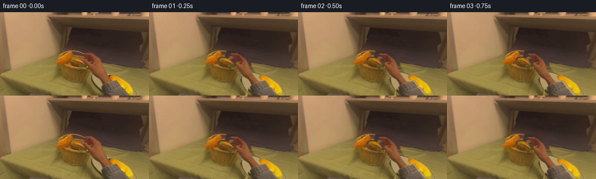
展开代码变化
--- 上一保存版本
+++ 本次保存版本
@@ -30,24 +30,28 @@
# only the areas that are truly hidden in the photograph.
low_arm=cv2.resize(armalpha,(W,H))
low_burger=cv2.resize(ba,(W,H))
-mask=((np.maximum(low_arm,low_burger)>.07)*255).astype(np.uint8)
+erase_poly=polygon([(134,69),(153,68),(170,80),(175,96),(185,111),(201,116),(226,144),(167,144),(170,122),(159,113),(151,102),(146,94),(139,89),(132,81)],.5)
+erase=cv2.resize(erase_poly,(W,H))
+erase=np.maximum(erase,low_burger)
+erase=cv2.GaussianBlur(cv2.dilate((erase>.08).astype('uint8'),np.ones((3,3),np.uint8)).astype(float),(3,3),.5)
+mask=((erase>.05)*255).astype(np.uint8)
clean=cv2.inpaint(source,mask,4,cv2.INPAINT_TELEA).astype(float)
y,x=np.mgrid[:H,:W]
# Background behind the lifted hand: the adjacent dark fabric and tablecloth.
sx=np.clip(x+57,0,255)
-cloth=source[y,sx].astype(float)
+cloth=source[np.clip(y+3,0,143),np.clip(x+59,195,230)].astype(float)
# Avoid copying the yellow food into the former forearm region.
cloth2=source[y,np.clip(x+89,233,253)].astype(float)
-line=83.4+.108*(x-140)
+line=85.0+.22*(x-140)
weight=np.clip((y-line+1)/3,0,1)
replacement=cloth*(1-weight[...,None])+cloth2*weight[...,None]
-repair=low_arm.copy()
+repair=erase.copy()
clean=over(clean,replacement,repair)
# Repair the small occluded right-hand edge of the woven basket with mirrored
# wicker pixels from its unobstructed left wall.
mirror=source[y,np.clip(254-x,0,255)].astype(float)
basket_region=((x>141)&(x<154)&(y>94)&(y<118)&(((x-126)/25)**2+((y-100)/21)**2<1)).astype(float)
-clean=over(clean,mirror,basket_region*low_arm)
+clean=over(clean,mirror,basket_region*erase)
# Interior revealed by picking up the sandwich. Preserve the actual rim.
inside=np.empty_like(clean)
noise=cv2.GaussianBlur(rng.normal(0,2,(H,W)),(0,0),.8)
@@ -56,15 +60,15 @@
clean=over(clean,inside,inside_mask)
# Re-create the ceramic plate in the formerly occluded tabletop area using a
# perspective ellipse, warm reflected illumination, and a fine dark rim.
-X,Y=x-187.0,y-129.0
-ang=np.deg2rad(34)
+X,Y=x-191.0,y-131.0
+ang=np.deg2rad(38)
u=X*np.cos(ang)+Y*np.sin(ang);v=-X*np.sin(ang)+Y*np.cos(ang)
-r=np.sqrt((u/35.0)**2+(v/20.0)**2)
+r=np.sqrt((u/39.0)**2+(v/20.0)**2)
plate=np.zeros_like(clean)
-for c,value in enumerate([188,169,126]):
+for c,value in enumerate([178,154,107]):
plate[:,:,c]=value + 3.5*(-v/20) + .9*noise
-edge=np.clip((r-.88)/.1,0,1)
-for c,col in enumerate([64,59,35]):plate[:,:,c]=plate[:,:,c]*(1-edge)+col*edge
+edge=np.clip((r-.94)/.042,0,1)
+for c,col in enumerate([72,65,41]):plate[:,:,c]=plate[:,:,c]*(1-edge)+col*edge
platealpha=np.clip((1.015-r)*22,0,1)
# Ground-contact shadow under the ceramic edge.
sh=np.exp(-(((u-1)/37)**2+((v-2)/22)**2)*2)*.20
@@ -77,6 +81,13 @@
is_yellow=((source[:,:,0].astype(float)>source[:,:,2]+48)&(source[:,:,1].astype(float)>source[:,:,2]+40)).astype(float)
ya*=cv2.GaussianBlur(is_yellow,(3,3),.4)
clean=over(clean,source.astype(float),ya)
+# Preserve bun, handle, woven rim and left basket from the observed source.
+stationary=polygon([(93,69),(118,63),(129,66),(137,69),(142,73),(139,76),(130,72),(123,70),(122,78),(116,88),(111,91),(124,94),(141,96),(150,95),(148,104),(143,112),(138,117),(128,121),(112,117),(106,108),(103,96),(96,91)],.25)
+stat=cv2.resize(stationary,(W,H))
+# Keep the rim and lower basket, not the burger's original contents.
+stat*=1-cv2.GaussianBlur(cv2.dilate((low_burger>.06).astype('uint8'),np.ones((3,3),np.uint8)).astype(float),(3,3),.5)
+stat*=1-np.clip(erase,0,1)
+clean=over(clean,source.astype(float),stat)
clean=np.clip(clean,0,255)
Image.fromarray(clean.astype('uint8')).save(ROOT/'.tmp/clean.png')
候选 03播放与检查图
点击播放 · 原生 RGB 像素

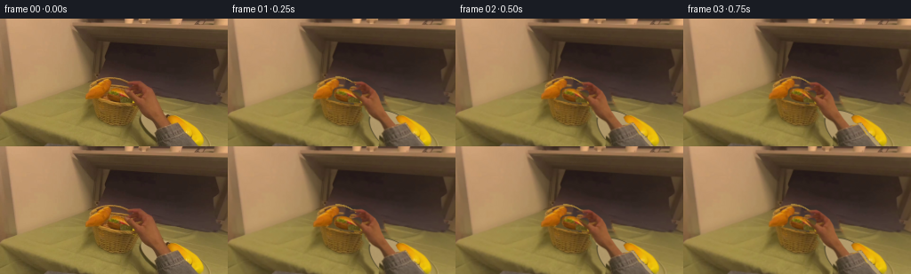
展开代码变化
--- 上一保存版本
+++ 本次保存版本
@@ -32,7 +32,8 @@
low_burger=cv2.resize(ba,(W,H))
erase_poly=polygon([(134,69),(153,68),(170,80),(175,96),(185,111),(201,116),(226,144),(167,144),(170,122),(159,113),(151,102),(146,94),(139,89),(132,81)],.5)
erase=cv2.resize(erase_poly,(W,H))
-erase=np.maximum(erase,low_burger)
+plate_erase=cv2.resize(polygon([(157,106),(177,105),(200,115),(221,139),(227,144),(171,144),(155,128),(153,114)],.5),(W,H))
+erase=np.maximum(erase,np.maximum(low_burger,plate_erase))
erase=cv2.GaussianBlur(cv2.dilate((erase>.08).astype('uint8'),np.ones((3,3),np.uint8)).astype(float),(3,3),.5)
mask=((erase>.05)*255).astype(np.uint8)
clean=cv2.inpaint(source,mask,4,cv2.INPAINT_TELEA).astype(float)
@@ -45,7 +46,7 @@
line=85.0+.22*(x-140)
weight=np.clip((y-line+1)/3,0,1)
replacement=cloth*(1-weight[...,None])+cloth2*weight[...,None]
-repair=erase.copy()
+repair=cv2.GaussianBlur(erase,(0,0),.9)
clean=over(clean,replacement,repair)
# Repair the small occluded right-hand edge of the woven basket with mirrored
# wicker pixels from its unobstructed left wall.
@@ -58,6 +59,12 @@
for c,v in enumerate([116,87,40]):inside[:,:,c]=v+noise+(y-86)*1.4
inside_mask=low_burger*np.clip((95.3-y)/1.3,0,1)
clean=over(clean,inside,inside_mask)
+# A recessed opening, dark at its rear, with the preserved wicker front rim.
+opening=np.sqrt(((x-128.4)/23.5)**2+((y-87.6)/8.5)**2)
+opening_a=np.clip((1-opening)*5,0,1)
+interior=clean.copy()
+for c,col in enumerate([92,72,31]):interior[:,:,c]=col+noise+(y-84)*1.4
+clean=over(clean,interior,opening_a)
# Re-create the ceramic plate in the formerly occluded tabletop area using a
# perspective ellipse, warm reflected illumination, and a fine dark rim.
X,Y=x-191.0,y-131.0
@@ -87,7 +94,18 @@
# Keep the rim and lower basket, not the burger's original contents.
stat*=1-cv2.GaussianBlur(cv2.dilate((low_burger>.06).astype('uint8'),np.ones((3,3),np.uint8)).astype(float),(3,3),.5)
stat*=1-np.clip(erase,0,1)
+front=cv2.resize(polygon([(105,95),(112,96),(126,97),(141,97),(152,96),(149,104),(145,113),(140,118),(130,121),(113,117),(107,109)],.25),(W,H))
+stat=np.maximum(stat,front*(1-low_arm))
clean=over(clean,source.astype(float),stat)
+# Continue the wicker carrying handle along its observed elliptical arc.
+handle=np.zeros((H*S,W*S,3),dtype=np.uint8)
+handle_a=Image.new('L',(W*S,H*S));hd=ImageDraw.Draw(handle_a)
+arc=[(xx,65.6+.018*(xx-122.0)**2) for xx in np.linspace(121,154,90)]
+hd.line([(round(xx*S),round(yy*S)) for xx,yy in arc],fill=255,width=round(1.3*S))
+hm=cv2.resize(np.array(handle_a,dtype=float)/255,(W,H))
+handle_col=np.empty_like(clean)
+for c,col in enumerate([164,130,60]):handle_col[:,:,c]=col+noise*2
+clean=over(clean,handle_col,hm)
clean=np.clip(clean,0,255)
Image.fromarray(clean.astype('uint8')).save(ROOT/'.tmp/clean.png')
候选 04播放与检查图
点击播放 · 原生 RGB 像素
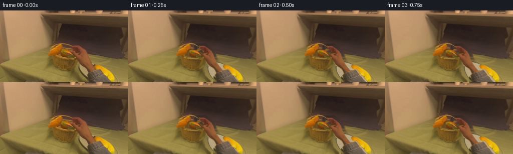
展开代码变化
--- 上一保存版本
+++ 本次保存版本
@@ -40,7 +40,7 @@
y,x=np.mgrid[:H,:W]
# Background behind the lifted hand: the adjacent dark fabric and tablecloth.
sx=np.clip(x+57,0,255)
-cloth=source[np.clip(y+3,0,143),np.clip(x+59,195,230)].astype(float)
+cloth=source[y,np.clip(x+59,195,230)].astype(float)
# Avoid copying the yellow food into the former forearm region.
cloth2=source[y,np.clip(x+89,233,253)].astype(float)
line=85.0+.22*(x-140)
@@ -72,7 +72,7 @@
u=X*np.cos(ang)+Y*np.sin(ang);v=-X*np.sin(ang)+Y*np.cos(ang)
r=np.sqrt((u/39.0)**2+(v/20.0)**2)
plate=np.zeros_like(clean)
-for c,value in enumerate([178,154,107]):
+for c,value in enumerate([185,166,128]):
plate[:,:,c]=value + 3.5*(-v/20) + .9*noise
edge=np.clip((r-.94)/.042,0,1)
for c,col in enumerate([72,65,41]):plate[:,:,c]=plate[:,:,c]*(1-edge)+col*edge
@@ -97,10 +97,19 @@
front=cv2.resize(polygon([(105,95),(112,96),(126,97),(141,97),(152,96),(149,104),(145,113),(140,118),(130,121),(113,117),(107,109)],.25),(W,H))
stat=np.maximum(stat,front*(1-low_arm))
clean=over(clean,source.astype(float),stat)
+rightwall=cv2.resize(polygon([(147,96),(157,94.8),(155.5,103),(151,112),(142,118.5),(140.5,112),(144,105)],.5),(W,H))
+clean=over(clean,mirror,rightwall)
+# Preserve a textured golden front lip around the revealed basket opening.
+rima=Image.new('L',(W*S,H*S));rd=ImageDraw.Draw(rima)
+rimcurve=[(xx,97.0-.0095*(xx-129)**2) for xx in np.linspace(111,156,100)]
+rd.line([(int(xx*S),int(yy*S)) for xx,yy in rimcurve],fill=255,width=round(1.2*S))
+rim_col=clean.copy()
+for c,col in enumerate([173,137,65]):rim_col[:,:,c]=col+noise*2
+clean=over(clean,rim_col,cv2.resize(np.array(rima,dtype=float)/255,(W,H)))
# Continue the wicker carrying handle along its observed elliptical arc.
handle=np.zeros((H*S,W*S,3),dtype=np.uint8)
handle_a=Image.new('L',(W*S,H*S));hd=ImageDraw.Draw(handle_a)
-arc=[(xx,65.6+.018*(xx-122.0)**2) for xx in np.linspace(121,154,90)]
+arc=[(xx,65.6+.021*(xx-122.0)**2) for xx in np.linspace(121,158,110)]
hd.line([(round(xx*S),round(yy*S)) for xx,yy in arc],fill=255,width=round(1.3*S))
hm=cv2.resize(np.array(handle_a,dtype=float)/255,(W,H))
handle_col=np.empty_like(clean)
可观测工具轨迹
实际执行的命令与返回图片。
命令 1exit 0
/bin/bash -lc "ls -la && cat prompt.txt && printf '\\n---RULES---\\n' && cat GENERATION_RULES.md"
命令 2exit 0
/bin/bash -lc "cat task_spec.json && cat artifact_io.py && python - <<'PY'
from PIL import Image
im=Image.open('first_frame.png');print(im.size);im.resize((1024,576)).save('.tmp/enlarged.png')
PY"命令 3exit 0
/bin/bash -lc "python - <<'PY'
import importlib.util
for x in ['cv2','scipy']:
print(x,importlib.util.find_spec(x))
from PIL import Image
im=Image.open('first_frame.png'); im.crop((92,62,223,144)).resize((1048,656)).save('.tmp/detail.png')
PY"命令 4exit 0
/bin/bash -lc "python - <<'PY'
from PIL import Image,ImageDraw
im=Image.open('.tmp/enlarged.png');d=ImageDraw.Draw(im)
for x in range(0,256,10):
d.line((x*4,0,x*4,576),fill=(200,200,200),width=1);d.text((x*4+2,2),str(x),fill='white')
for y in range(0,144,10):
d.line((0,y*4,1024,y*4),fill=(200,200,200),width=1);d.text((2,y*4+2),str(y),fill='white')
im.save('.tmp/grid.png')
PY"命令 5exit 0
/bin/bash -lc "python - <<'PY'
from PIL import Image,ImageDraw
im=Image.open('first_frame.png').resize((1536,864))
d=ImageDraw.Draw(im)
for x in range(135,195,5):
d.line((x*6,65*6,x*6,130*6),fill=(160,160,160)); d.text((x*6+1,65*6),str(x),fill='white')
for y in range(65,130,5):
d.line((135*6,y*6,195*6,y*6),fill=(160,160,160));d.text((135*6,y*6),str(y),fill='white')
im.crop((135*6,65*6,195*6,130*6)).save('.tmp/handgrid.png')
PY"命令 6exit 0
/bin/bash -lc "python - <<'PY'
from PIL import Image
im=Image.open('first_frame.png')
for p in [(164,113),(167,120),(160,111),(174,127),(225,142),(130,104),(142,73),(192,98)]: print(p,im.getpixel(p))
PY"命令 7exit 0
/bin/bash -lc "python - <<'PY'
from PIL import Image
im=Image.open('first_frame.png');im.crop((117,76,153,98)).resize((864,528)).save('.tmp/burger.png')
PY"命令 8exit 0
/bin/bash -lc "cat > generate.py <<'PY'
\"\"\"Deterministic, source-pixel based short pick-and-place animation.\"\"\"
from pathlib import Path
import numpy as np
import cv2
from PIL import Image, ImageDraw, ImageFilter
import artifact_io
ROOT=Path(__file__).resolve().parent
W,H=256,144
S=4
rng=np.random.default_rng(5)
source=np.array(Image.open(ROOT/'first_frame.png').convert('RGB'))
def polygon(points,blur=.35):
a=Image.new('L',(W*S,H*S));ImageDraw.Draw(a).polygon([(round(x*S),round(y*S)) for x,y in points],fill=255)
if blur:a=a.filter(ImageFilter.GaussianBlur(blur*S))
return np.array(a,dtype=np.float32)/255
def over(bg,fg,a):
return bg*(1-a[...,None])+fg*a[...,None]
handpts=[(136.9,72.3),(142.4,70.5),(150.7,70.2),(155.3,72.6),(160.0,76.1),(165.9,80.8),(170.0,87.0),(172.4,95.0),(177.0,103.8),(182.6,111.5),(188.9,118.9),(187.0,121.0),(175.4,125.0),(172.5,118.4),(166.8,113.7),(160.3,110.0),(155.7,104.3),(152.7,97.2),(148.3,92.0),(142.3,88.2),(138.5,84.9),(134.8,81.9),(135.2,80.1),(137.0,79.9),(140.0,82.1),(144.7,85.0),(149.3,88.1),(151.0,86.5),(151.7,83.0),(149.4,80.0),(145.4,79.6),(141.3,80.7),(138.0,82.0),(136.9,79.1),(138.6,76.8),(142.4,74.9),(145.6,74.1),(143.5,73.4),(138.5,73.7)]
sleevepts=[(175.4,124.5),(179.1,121.0),(199.0,117.0),(207.0,125.2),(215.0,136.2),(223.0,144),(170.6,144),(171.0,131.5)]
burgerpts=[(119.4,81.5),(122.0,79.3),(127.7,78.5),(132.9,79.2),(138.2,81.7),(141.9,84.6),(145.0,88.5),(147.8,92.4),(147.0,94.9),(141.0,95.0),(134.0,94.2),(127.3,93.1),(122.0,90.6),(119.3,86.6)]
ha=polygon(handpts,.3)
sa=polygon(sleevepts,.28)
ba=polygon(burgerpts,.35)
armalpha=np.maximum(ha,sa)
# Clean the old moving objects by classical local inpainting, then reconstruct
# only the areas that are truly hidden in the photograph.
low_arm=cv2.resize(armalpha,(W,H))
low_burger=cv2.resize(ba,(W,H))
mask=((np.maximum(low_arm,low_burger)>.07)*255).astype(np.uint8)
clean=cv2.inpaint(source,mask,4,cv2.INPAINT_TELEA).astype(float)
y,x=np.mgrid[:H,:W]
# Background behind the lifted hand: the adjacent dark fabric and tablecloth.
sx=np.clip(x+57,0,255)
cloth=source[y,sx].astype(float)
# Avoid copying the yellow food into the former forearm region.
cloth2=source[y,np.clip(x+89,233,253)].astype(float)
line=83.4+.108*(x-140)
weight=np.clip((y-line+1)/3,0,1)
replacement=cloth*(1-weight[...,None])+cloth2*weight[...,None]
repair=low_arm.copy()
clean=over(clean,replacement,repair)
# Repair the small occluded right-hand edge of the woven basket with mirrored
# wicker pixels from its unobstructed left wall.
mirror=source[y,np.clip(254-x,0,255)].astype(float)
basket_region=((x>141)&(x<154)&(y>94)&(y<118)&(((x-126)/25)**2+((y-100)/21)**2<1)).astype(float)
clean=over(clean,mirror,basket_region*low_arm)
# Interior revealed by picking up the sandwich. Preserve the actual rim.
inside=np.empty_like(clean)
noise=cv2.GaussianBlur(rng.normal(0,2,(H,W)),(0,0),.8)
for c,v in enumerate([116,87,40]):inside[:,:,c]=v+noise+(y-86)*1.4
inside_mask=low_burger*np.clip((95.3-y)/1.3,0,1)
clean=over(clean,inside,inside_mask)
# Re-create the ceramic plate in the formerly occluded tabletop area using a
# perspective ellipse, warm reflected illumination, and a fine dark rim.
X,Y=x-187.0,y-129.0
ang=np.deg2rad(34)
u=X*np.cos(ang)+Y*np.sin(ang);v=-X*np.sin(ang)+Y*np.cos(ang)
r=np.sqrt((u/35.0)**2+(v/20.0)**2)
plate=np.zeros_like(clean)
for c,value in enumerate([188,169,126]):
plate[:,:,c]=value + 3.5*(-v/20) + .9*noise
edge=np.clip((r-.88)/.1,0,1)
for c,col in enumerate([64,59,35]):plate[:,:,c]=plate[:,:,c]*(1-edge)+col*edge
platealpha=np.clip((1.015-r)*22,0,1)
# Ground-contact shadow under the ceramic edge.
sh=np.exp(-(((u-1)/37)**2+((v-2)/22)**2)*2)*.20
clean*=1-sh[...,None]
clean=over(clean,plate,platealpha)
# Keep the yellow object exactly as seen, in front of the right plate rim.
yellowpts=[(188.5,110.9),(192.3,108.3),(197.1,108.5),(203.2,111.1),(211.5,116.2),(218.8,123.6),(225.3,132.0),(228.6,140.8),(227.5,144),(217.9,144),(212.2,136.8),(206.1,131.4),(200.5,125.4),(196.4,119.6),(191.2,116.2)]
ya=cv2.resize(polygon(yellowpts,.25),(W,H))
# Only the visible yellow pixels should be restored; gray sleeve still moves.
is_yellow=((source[:,:,0].astype(float)>source[:,:,2]+48)&(source[:,:,1].astype(float)>source[:,:,2]+40)).astype(float)
ya*=cv2.GaussianBlur(is_yellow,(3,3),.4)
clean=over(clean,source.astype(float),ya)
clean=np.clip(clean,0,255)
Image.fromarray(clean.astype('uint8')).save(ROOT/'.tmp/clean.png')
hi_source=cv2.resize(source,(W*S,H*S),interpolation=cv2.INTER_CUBIC).astype(float)
hi_clean=cv2.resize(clean,(W*S,H*S),interpolation=cv2.INTER_CUBIC).astype(float)
# Extend the authentic sweater texture beyond the image, so no crop edge is
# exposed when the forearm lifts.
EH=208
arm_rgb=np.zeros((EH*S,W*S,3),float)
arm_rgb[:H*S]=hi_source
for row in range(H*S,EH*S):
sample=H*S-1-(row-H*S)%(25*S)
arm_rgb[row]=hi_source[sample]
arm_a=np.zeros((EH*S,W*S),float);arm_a[:H*S]=armalpha
ext=Image.new('L',(W*S,EH*S));ImageDraw.Draw(ext).polygon([(171*S,142*S),(222*S,142*S),(256*S,182*S),(256*S,208*S),(183*S,208*S)],fill=255)
ext=np.array(ext,dtype=float)/255
arm_a=np.maximum(arm_a,ext)
# A sharp cutout would emphasize the source's defocus; the alpha is already
# softened by the same sub-pixel optical blur as the still image.
def transform(rgb,alpha,c,d,scale=1.,rot=0.):
angle=np.deg2rad(rot)
a=scale*np.cos(angle);b=scale*np.sin(angle)
M=np.array([[a,-b,(d[0]-a*c[0]+b*c[1])*S],[b,a,(d[1]-b*c[0]-a*c[1])*S]])
prem=rgb*alpha[...,None]
rgb2=cv2.warpAffine(prem,M,(W*S,H*S),flags=cv2.INTER_LINEAR,borderMode=cv2.BORDER_CONSTANT)
a2=cv2.warpAffine(alpha,M,(W*S,H*S),flags=cv2.INTER_LINEAR,borderMode=cv2.BORDER_CONSTANT)
return rgb2,a2
def smooth(a):return a*a*(3-2*a)
def interp(i,keys):
for j in range(len(keys)-1):
t0,p0=keys[j];t1,p1=keys[j+1]
if i<=t1:
f=smooth(np.clip((i-t0)/(t1-t0),0,1));return np.asarray(p0)*(1-f)+np.asarray(p1)*f
return np.array(keys[-1][1],float)
burger_c=np.array([133.,86.5]);grip=np.array([144.,84.])
keys=[(0,[0,0,1,0]),(3,[0,0,1,0]),(7,[4,-17,1.05,-7]),(10,[25,-12,1.12,-3]),(13,[43,20,1.2,4]),(15,[44,33,1.19,4]),(19,[44,33,1.19,4])]
frames=[]
for i in range(20):
if i==0:
frames.append(source.copy());continue
dx,dy,scale,rot=interp(i,keys)
# Camera and illumination remain stable during the task.
frame=hi_clean.copy()
# Soft shadow travels beneath the held burger, contracting as it settles.
center=burger_c+np.array([dx,dy])
Yh,Xh=np.mgrid[:H*S,:W*S]/S
contact=np.clip((i-11)/4,0,1)
shadow=np.exp(-(((Xh-center[0])/(15*scale+2))**2+((Yh-center[1]-8)/(3.5+2*(1-contact)))**2)*1.5)*(.08+.18*contact)
frame*=1-shadow[...,None]
bp,ab=transform(hi_source,ba,burger_c,center,scale,rot)
frame=frame*(1-ab[...,None])+bp
# Closing motion in the first second; the palm and sweater remain actual
# photo pixels throughout transport, with the index/thumb pinch leading.
handdelta=np.array([dx,dy])
handrot=rot*.6
handscale=1+(scale-1)*.35
if i<4:
f=smooth(i/3)
handdelta+=np.array([-1.8*f,1.1*f]);handrot=1*f
elif i<16:
handdelta+=np.array([-1.8,1.1])
else:
f=smooth((i-15)/4)
handdelta+=np.array([-1.8+47*f,1.1+12*f])
handrot+=14*f
# Relative grip stays against the right edge of the sandwich.
target=grip+handdelta
ap,aa=transform(arm_rgb,arm_a,grip,target,handscale,handrot)
frame=frame*(1-aa[...,None])+ap
# Crop a very slight, physically natural downward head tilt following the
# transfer. It is subpixel early, then about three pixels by placement.
tilt=interp(i,[(0,[0]),(7,[.3]),(14,[3.0]),(19,[3.2])])[0]
m=np.array([[1.,0.,0.],[0.,1.,-tilt*S]])
frame=cv2.warpAffine(frame,m,(W*S,H*S),flags=cv2.INTER_LINEAR,borderMode=cv2.BORDER_REPLICATE)
frame=cv2.resize(frame,(W,H),interpolation=cv2.INTER_AREA)
frames.append(np.clip(frame,0,255).astype(np.uint8))
frames=np.stack(frames)
artifact_io.save(frames,ROOT)
PY
python generate.py"命令 9exit 0
/bin/bash -lc "python - <<'PY'
from PIL import Image
for i in [3,8,14,19]:Image.open(f'frames/{i:02}.png').resize((1024,576)).save(f'.tmp/frame{i}.png')
PY"命令 10exit 0
/bin/bash -lc "python - <<'PY'
from PIL import Image
im=Image.open('first_frame.png')
for y in [70,75,80,85,90,95,100,105,115,125,135]:print(y,[im.getpixel((x,y)) for x in [160,200,225,240,250]])
PY"命令 11exit 0
/bin/bash -lc "python - <<'PY'
p='generate.py'
s=open(p).read()
s=s.replace(\"mask=((np.maximum(low_arm,low_burger)>.07)*255).astype(np.uint8)\",\"erase_poly=polygon([(134,69),(153,68),(170,80),(175,96),(185,111),(201,116),(226,144),(167,144),(170,122),(159,113),(151,102),(146,94),(139,89),(132,81)],.5)\\nerase=cv2.resize(erase_poly,(W,H))\\nerase=np.maximum(erase,low_burger)\\nerase=cv2.GaussianBlur(cv2.dilate((erase>.08).astype('uint8'),np.ones((3,3),np.uint8)).astype(float),(3,3),.5)\\nmask=((erase>.05)*255).astype(np.uint8)\")
s=s.replace(\"cloth=source[y,sx].astype(float)\",\"cloth=source[np.clip(y+3,0,143),np.clip(x+59,195,230)].astype(float)\")
s=s.replace(\"line=83.4+.108*(x-140)\",\"line=85.0+.22*(x-140)\")
s=s.replace(\"repair=low_arm.copy()\",\"repair=erase.copy()\")
s=s.replace(\"basket_region*low_arm\",\"basket_region*erase\")
s=s.replace(\"X,Y=x-187.0,y-129.0\",\"X,Y=x-191.0,y-131.0\")
s=s.replace(\"ang=np.deg2rad(34)\",\"ang=np.deg2rad(38)\")
s=s.replace(\"u/35.0\",\"u/39.0\")
s=s.replace(\"(r-.88)/.1\",\"(r-.94)/.042\")
s=s.replace(\"[188,169,126]\",\"[178,154,107]\")
s=s.replace(\"[64,59,35]\",\"[72,65,41]\")
# recover upper left basket edge from the source; the bun and wicker handle are stationary.
s=s.replace(\"clean=np.clip(clean,0,255)\",\"# Preserve bun, handle, woven rim and left basket from the observed source.\\nstationary=polygon([(93,69),(118,63),(129,66),(137,69),(142,73),(139,76),(130,72),(123,70),(122,78),(116,88),(111,91),(124,94),(141,96),(150,95),(148,104),(143,112),(138,117),(128,121),(112,117),(106,108),(103,96),(96,91)],.25)\\nstat=cv2.resize(stationary,(W,H))\\n# Keep the rim and lower basket, not the burger's original contents.\\nstat*=1-cv2.GaussianBlur(cv2.dilate((low_burger>.06).astype('uint8'),np.ones((3,3),np.uint8)).astype(float),(3,3),.5)\\nstat*=1-np.clip(erase*polygon if False else erase,0,1)\\nclean=over(clean,source.astype(float),stat)\\nclean=np.clip(clean,0,255)\")
# simplify accidental expression
s=s.replace(\"np.clip(erase*polygon if False else erase,0,1)\",\"np.clip(erase,0,1)\")
open(p,'w').write(s)
PY
python generate.py"命令 12exit 0
/bin/bash -lc "python - <<'PY'
from PIL import Image
Image.open('.tmp/clean.png').resize((1024,576)).save('.tmp/cleanlarge.png')
PY"命令 13exit 0
/bin/bash -lc "python - <<'PY'
p='generate.py';s=open(p).read()
s=s.replace(\"erase=np.maximum(erase,low_burger)\",\"plate_erase=cv2.resize(polygon([(157,106),(177,105),(200,115),(221,139),(227,144),(171,144),(155,128),(153,114)],.5),(W,H))\\nerase=np.maximum(erase,np.maximum(low_burger,plate_erase))\")
s=s.replace(\"cloth=source[np.clip(y+3,0,143),np.clip(x+59,195,230)].astype(float)\",\"cloth=source[np.clip(y+3,0,143),np.clip(x+59,195,230)].astype(float)\")
s=s.replace(\"repair=erase.copy()\",\"repair=cv2.GaussianBlur(erase,(0,0),.9)\")
s=s.replace(\"clean=over(clean,inside,inside_mask)\",\"clean=over(clean,inside,inside_mask)\\n# A recessed opening, dark at its rear, with the preserved wicker front rim.\\nopening=np.sqrt(((x-128.4)/23.5)**2+((y-87.6)/8.5)**2)\\nopening_a=np.clip((1-opening)*5,0,1)\\ninterior=clean.copy()\\nfor c,col in enumerate([92,72,31]):interior[:,:,c]=col+noise+(y-84)*1.4\\nclean=over(clean,interior,opening_a)\")
# add stationary complete basket front wall and arch restoration, avoiding original burger
s=s.replace(\"stat*=1-np.clip(erase,0,1)\",\"stat*=1-np.clip(erase,0,1)\\nfront=cv2.resize(polygon([(105,95),(112,96),(126,97),(141,97),(152,96),(149,104),(145,113),(140,118),(130,121),(113,117),(107,109)],.25),(W,H))\\nstat=np.maximum(stat,front*(1-low_arm))\")
s=s.replace(\"clean=np.clip(clean,0,255)\",\"# Continue the wicker carrying handle along its observed elliptical arc.\\nhandle=np.zeros((H*S,W*S,3),dtype=np.uint8)\\nhandle_a=Image.new('L',(W*S,H*S));hd=ImageDraw.Draw(handle_a)\\narc=[(xx,65.6+.018*(xx-122.0)**2) for xx in np.linspace(121,154,90)]\\nhd.line([(round(xx*S),round(yy*S)) for xx,yy in arc],fill=255,width=round(1.3*S))\\nhm=cv2.resize(np.array(handle_a,dtype=float)/255,(W,H))\\nhandle_col=np.empty_like(clean)\\nfor c,col in enumerate([164,130,60]):handle_col[:,:,c]=col+noise*2\\nclean=over(clean,handle_col,hm)\\nclean=np.clip(clean,0,255)\")
# widen beta mask for burger avoids narrow basket attached at right
open(p,'w').write(s)
PY
python generate.py"命令 14exit 0
/bin/bash -lc "python - <<'PY'
from PIL import Image
Image.open('.tmp/clean.png').resize((1024,576)).save('.tmp/cleanlarge.png')
Image.open('frames/14.png').resize((1024,576)).save('.tmp/14large.png')
PY"命令 15exit 0
/bin/bash -lc "python - <<'PY'
p='generate.py';s=open(p).read()
s=s.replace(\"cloth=source[np.clip(y+3,0,143),np.clip(x+59,195,230)].astype(float)\",\"cloth=source[y,np.clip(x+59,195,230)].astype(float)\")
s=s.replace(\"[178,154,107]\",\"[185,166,128]\")
s=s.replace(\"arc=[(xx,65.6+.018*(xx-122.0)**2) for xx in np.linspace(121,154,90)]\",\"arc=[(xx,65.6+.021*(xx-122.0)**2) for xx in np.linspace(121,158,110)]\")
s=s.replace(\"clean=over(clean,source.astype(float),stat)\",\"clean=over(clean,source.astype(float),stat)\\nrightwall=cv2.resize(polygon([(147,96),(157,94.8),(155.5,103),(151,112),(142,118.5),(140.5,112),(144,105)],.5),(W,H))\\nclean=over(clean,mirror,rightwall)\\n# Preserve a textured golden front lip around the revealed basket opening.\\nrima=Image.new('L',(W*S,H*S));rd=ImageDraw.Draw(rima)\\nrimcurve=[(xx,97.0-.0095*(xx-129)**2) for xx in np.linspace(111,156,100)]\\nrd.line([(int(xx*S),int(yy*S)) for xx,yy in rimcurve],fill=255,width=round(1.2*S))\\nrim_col=clean.copy()\\nfor c,col in enumerate([173,137,65]):rim_col[:,:,c]=col+noise*2\\nclean=over(clean,rim_col,cv2.resize(np.array(rima,dtype=float)/255,(W,H)))\")
open(p,'w').write(s)
PY
python generate.py
python - <<'PY'
import numpy as np
from PIL import Image
from pathlib import Path
frames=np.stack([np.asarray(Image.open(p).convert('RGB')) for p in sorted(Path('frames').glob('*.png'))])
assert frames.shape==(20,144,256,3)
assert frames.dtype==np.uint8
assert np.array_equal(frames[0],np.asarray(Image.open('first_frame.png').convert('RGB')))
print('Verified:',frames.shape,frames.dtype,'first frame pixel-identical')
print('Artifacts:', [str(x) for x in Path('.').glob('*') if x.name in ['pixels.npz','index.html','inspection.png','generate.py']])
PY"视觉工具实际返回图片 1
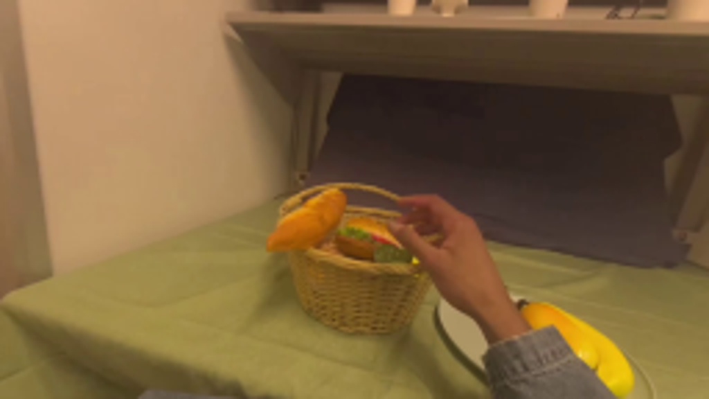
视觉工具实际返回图片 2
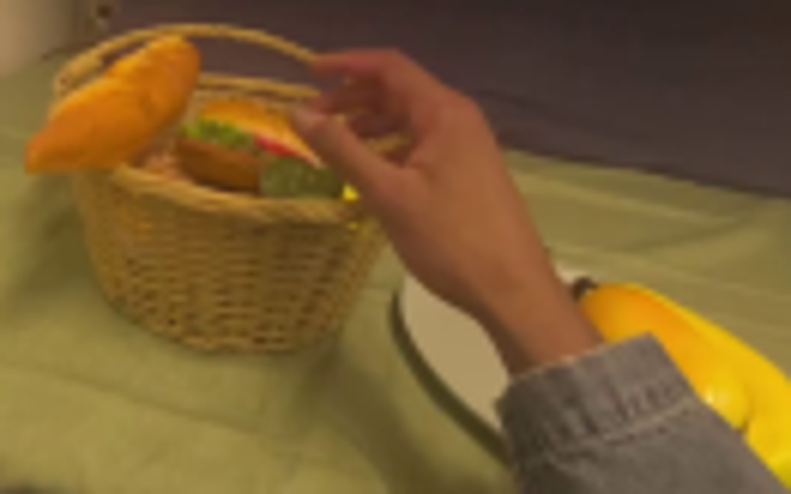
视觉工具实际返回图片 3
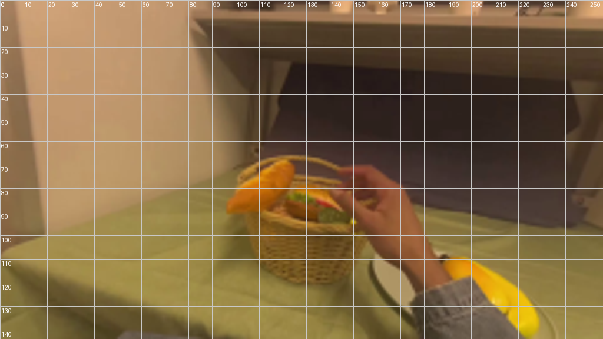
视觉工具实际返回图片 4
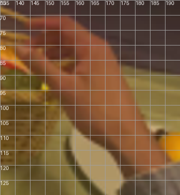
视觉工具实际返回图片 5
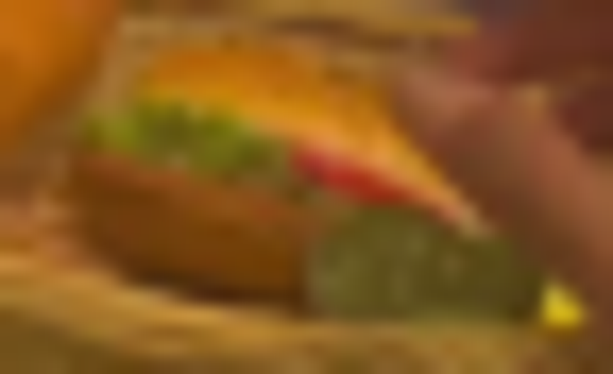
视觉工具实际返回图片 6
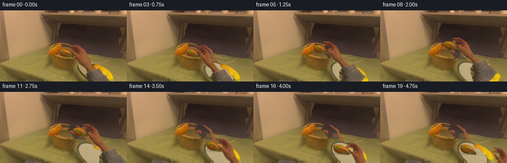
视觉工具实际返回图片 7
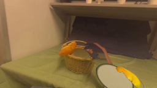
视觉工具实际返回图片 8
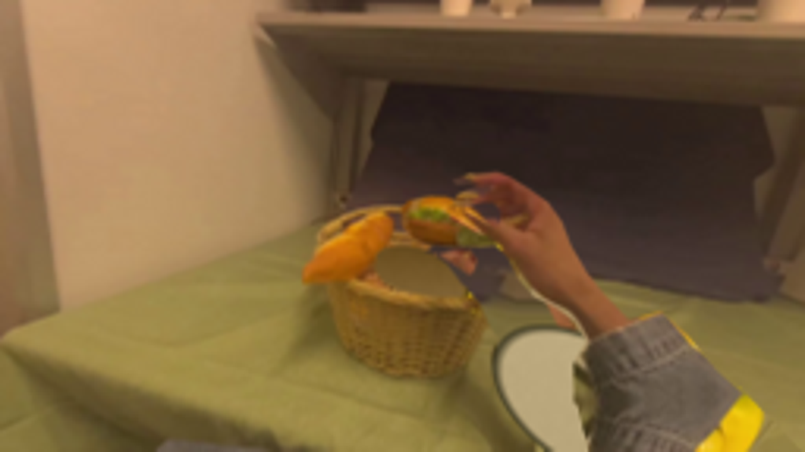
视觉工具实际返回图片 9

视觉工具实际返回图片 10
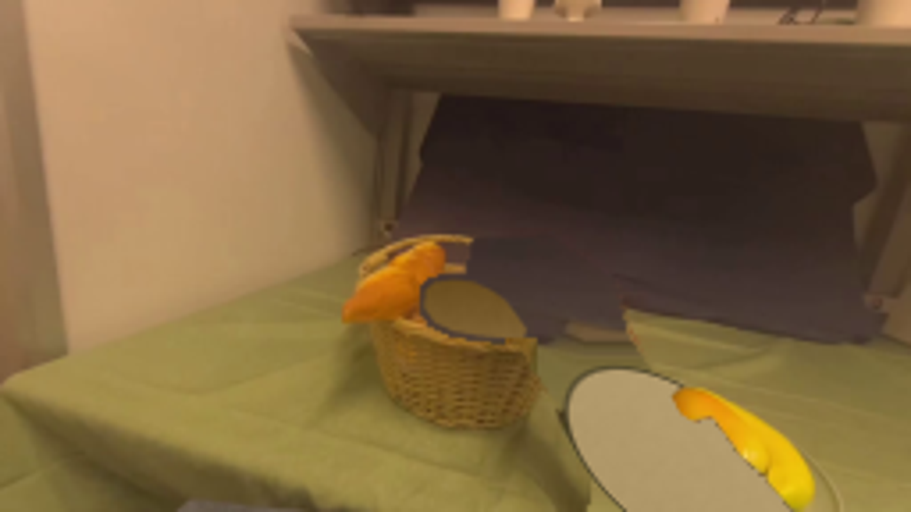
视觉工具实际返回图片 11
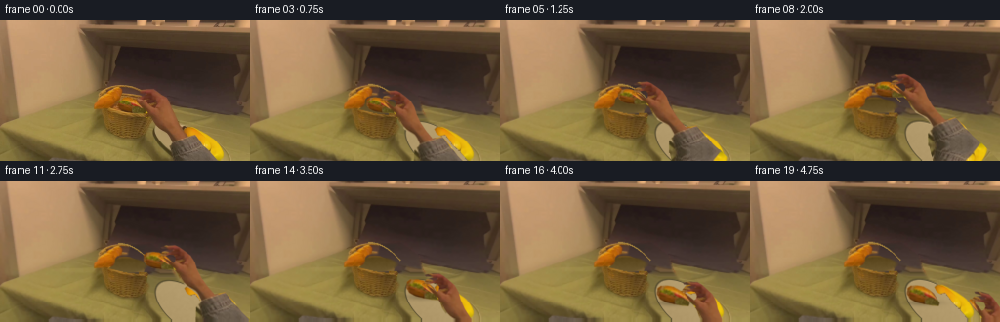
视觉工具实际返回图片 12
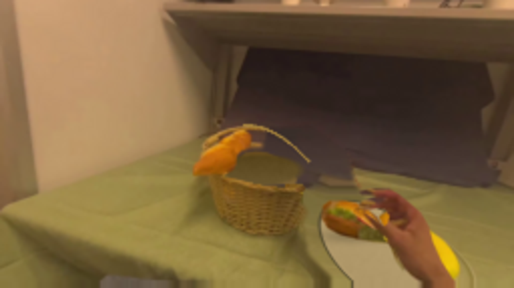
视觉工具实际返回图片 13
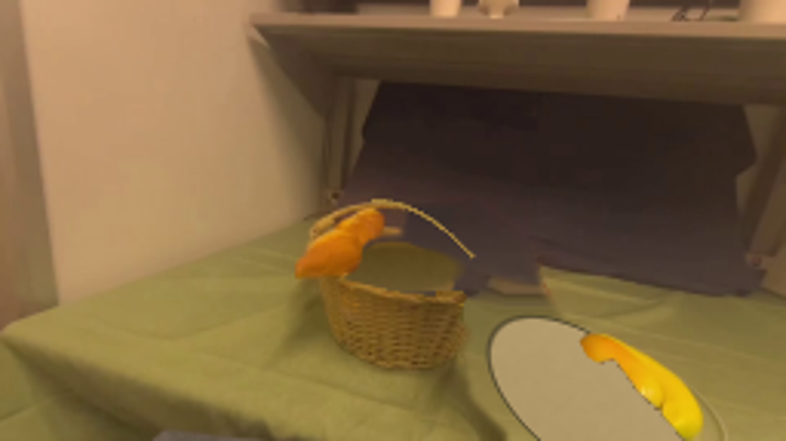
保存候选 4 份；完成命令 15 次；可验证图片返回 13 张。原始 API 响应与完整日志保留在本地。